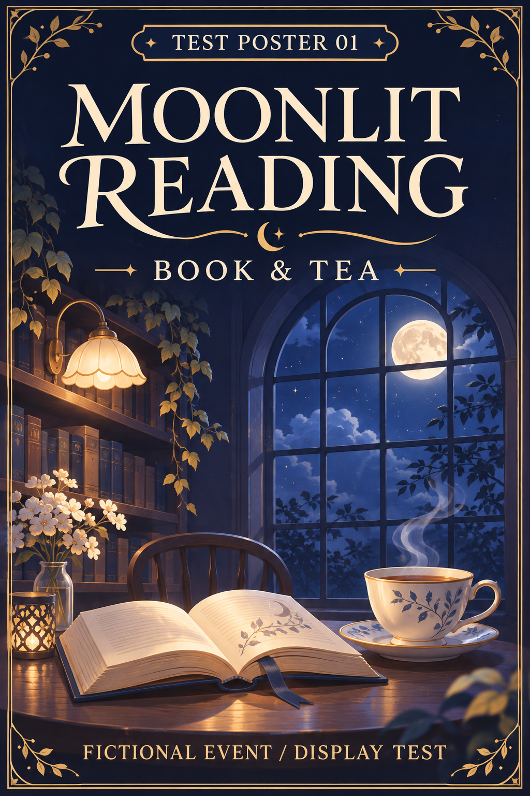
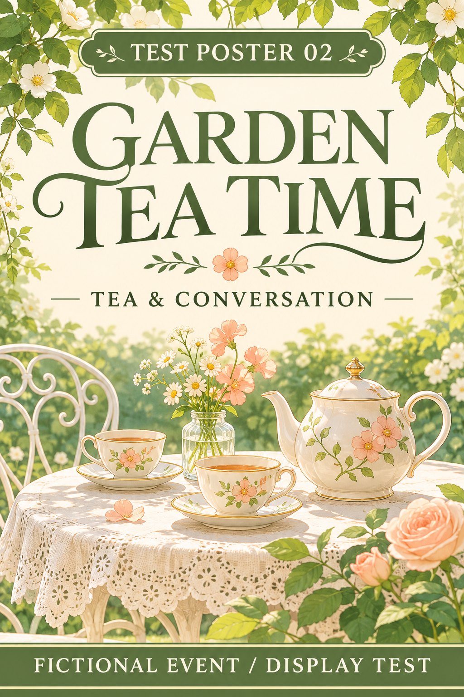
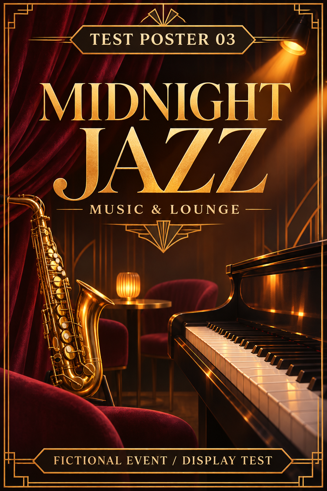

01 · MOONLIT READING
画像を開くhttps://taki98029.github.io/deltaria-posters/images/posters/main/slot0.png

02 · GARDEN TEA TIME
画像を開くhttps://taki98029.github.io/deltaria-posters/images/posters/main/slot1.png

03 · MIDNIGHT JAZZ
画像を開くhttps://taki98029.github.io/deltaria-posters/images/posters/main/slot2.png